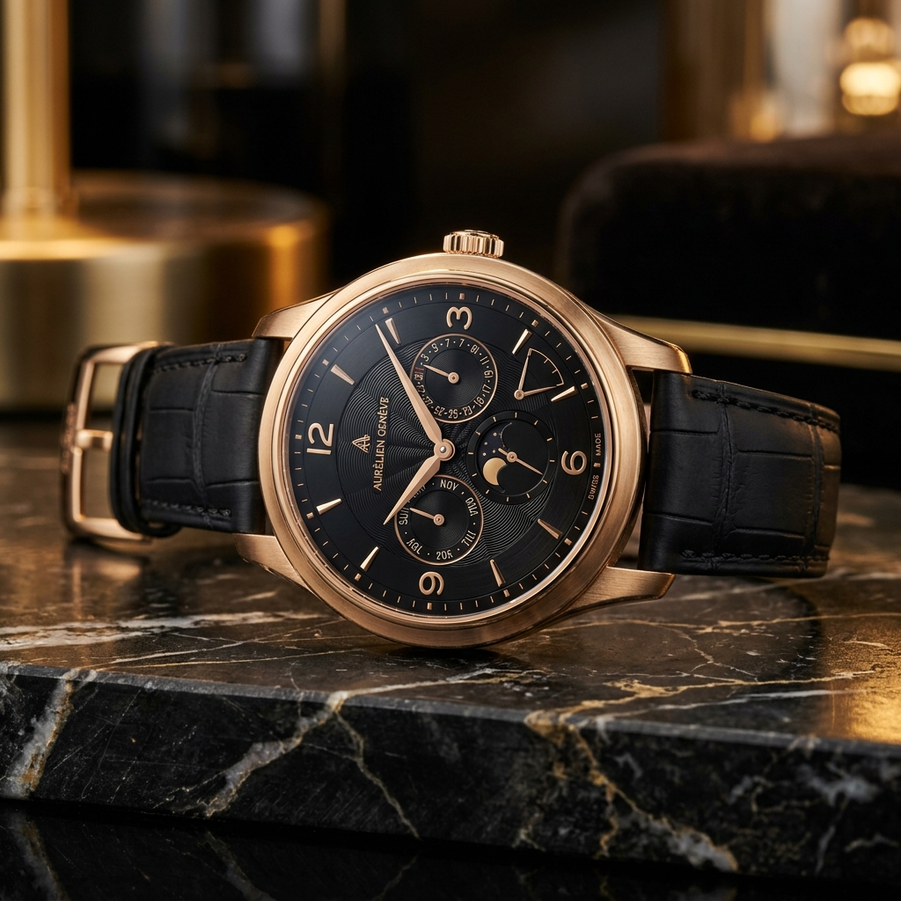
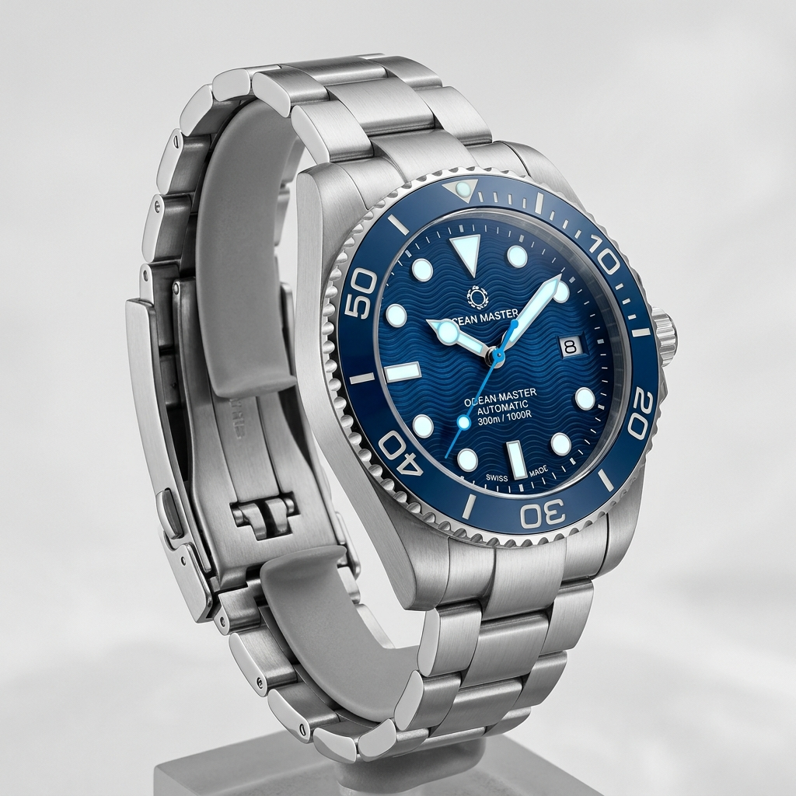

Our Philosophy
Time is not merely a duration to be measured, but a canvas for artistic precision, mechanical truth, and physical heritage.
Established as a private family workshop, the house began with a simple but profound mission: to create timepieces of absolute integrity. Our name, derived from the classical Arabic word Sadiq (صادق), translates directly to truthful or honest. In the world of high horology, we interpret this as a solemn vow: truthful timekeeping, honest materials, and absolute mechanical sincerity.
Transitioning into the French luxury tradition, the house became Maison Sadique, combining Parisian aesthetic avant-gardism with Swiss manufacturing precision. Today, we remain true to this origin. We reject the mass-production methods of modern watchmaking, opting instead to hand-sculpt, polish, and regulate every dial, wheel, and balance spring within our independent workshop.
Honest Metallurgy & Craft
At Maison Sadique, we only deploy materials that stand the test of centuries. Our casings are milled from single blocks of 18-karat rose gold and marine-grade brushed steel. We source our straps from historic leather-craft tanneries, ensuring every hide is organically dyed and hand-stitched. Underneath our double-domed anti-reflective sapphire crystals sits a complex mechanical heart: a custom Swiss calibre regulated to chronological perfection.
By maintaining extremely small production limits, we preserve the personal relationship between the horologist and the collector. A watch from Maison Sadique is not just an instrument of time; it is a mechanical sculpture of absolute truth.
Concierge Consultation
We invite collectors to participate in the creation of their watch. Through our WhatsApp private chat, you can consult with our designers to choose personalized case finishes, custom leather strap materials, dial engravings, and hand selections.
Begin Bespoke Build